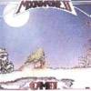

strange music page
progressive rock * * * british 1970
|
#イギリス70年代プログレ。とか。
|
- Camel
- Cresida
- Curved Air
- Fields
- Still Life
|
- The Great Marsh
- Rhayader (醜い画家ラヤダー)
- Rhayader Goes To Town (ラヤダー町へ行く)
- Sanctuary (聖域)
- Fritha (少女フリーザ)
- The Snow Goose (白雁)
- Friendship (友情)
- Migration (渡り鳥)
- Rhayader Alone (孤独のラヤダー)
- Flight Of The Snow Goose (白雁の飛翔)
- Preparation
- Dunkirk
- Epitaph (碑銘)
- Fritha Alone (ひとりぼっちのフリーザ)
- La Princesse Perdue (迷子の王女様)
- The Great Marsh
- Andrew Lattimer (guitars,flute,vocals)
- Andy Ward (drums)
- Doug Ferguson (bass)
- Pete Bardens (keyboards)
POLYDOR: POCD-1822 (original release 1975 - DERAM RECORDS)
#1976年の4枚目。オリジナルメンバーでの最後のアルバムです。
この緩～いファンタジックな感じがキャメルらしい所なのかなーなんて思います。苦手な人には全く駄目なのだろうけど。
6曲目のフルートのイントロから始まる展開とかちょっとだけ残ってるシンフォファンの血が騒ぎます。個人的には前作の方が好きです。

- Aristillus
- Song within A Song (永遠のしらべ)
- Chord Change (転調)
- Sprit of The Water (水の精)
- Another Night (月夜の幻想曲)
- Air Born (ゆるやかな飛行)
- Lunar Sea (月の湖)
- Andrew Lattimer (guitars,flute,vocals)
- Andy Ward (drums)
- Doug Ferguson (bass)
- Pete Bardens (keyboards)
POLYDOR: POCD-1823 (original relase 1976 - DERAM RECORDS)
#キャメルというより、Richard Sinclairっぷりが好き。
- First Light (光と影)
- Metrognome
- Tell Me (君の心に・・・)
- Highways Of The Sun
- Uneven Song (心のさざ波)
- One of These Days I'll Get An Early Night (夜のとばり)
- Elke (白鳥のファンタジー)
- Skylines
- Rain Dances
- Andrew Latimer (guitars,vocals,flute)
- Peter Bardens (keyboards,organ,piano,synthesizers)
- Andy Ward (drums)
- Richard Sinclair (bass,vocals)
- Mel Collins (sax)
- Martin Drover (trumpet on 6.)(flugelhorn on 8.)
- Malcom Griffiths (trombone on 6.8.)
- Brian Eno (synthesizers on 7.)
- Fiona Hibbert (harp on 7.)
#ヴァーティゴ、ヴァーティゴ。もうイギリスっぽいとしか言い様の無いちょっとジャジーなオルガンロックです。特に2曲目のハモンドの渋い曲なんてイイですね、イギリスのプログレ好きなら9割ハマる音です。ちょっと今聴くと野暮ったいというかダサいんですけど、一人で部屋で聴いてる(暗いなぁプログレマニアはこれだから...)分にはOKかなと。
- Asylum
- Munich
- Goodbye Post Office Tower Goodbye
- Riprieved
- Lisa
- Summer Weekend Of A Lifetime
- Let Them Come When They Will
- Angus Cullen (vocals)
- John Culley (guitars)
- Peter Jennings (harpsichord,piano,organ)
- Kevin McCarthy (bass)
- Iain Clark (drums)
NIPPON PHONOGRAM: PHCR-4209 (original release 1971 - Vertigo)
- Marie Antoinette
- Melinda (More ore Less)
- Not Quite The Same (多少の違い)
- Cheetah
- Ultra-Vivaldi
- Phantasmagoria
- Whose Shoulder Are You Looking Over Anyway? (前にいるのは誰)
- Over And Above
- Once A Ghost, Always A Ghost (霊魂)
- Sonja Kristina (vocals)
- Darryl Way (violins)
- Francis Monkman (piano,synthesizers,guitars,bass)
- Florian Pilkington-Miksa (drums)
WARNER MUSIC JAPAN: WPCP-4224 (original release 1972)
#渋谷のBANANA RECORDで久しぶりにプログレのアナログコーナーを久しぶりに覗いてたら発見、\1000でした。唯一CDになってないカーヴドエアの4枚目です。
元々カーヴドエアってF.MonkmanとD.Wayeの二人のバンドだったんですけど、3枚目を最後に二人ともいなくなっちゃいます。そいで、S.Kristinaが無理矢理メンバー集めて作ったのがこのアルバムらしいです。
Eddie Jobsonの活躍っぷりがすごいです、F.MonkmanとD.Wayの抜けた穴を埋めて余りある存在感です。やっぱスゴイ人なんだなぁと再認識....再結成するとか言ってたU.K.はどこに行っちゃったんだろう...(2000.4.24)
- The Purple Speed Queen
- Elfin Boy
- Metamorphosis
- World
- Armin
- U.H.F.
- Two-Three-Two
- Easy
- Sonja Kristina (vocals)
- Kirby (guitars)
- Eddie Jobson (violins,VCS3,mellotron,piano,organ)
- Mike Wedgewood (bass)
- Jim Russell (percussions)
WARNER PIONEER: P-8359W (1973)
- A Friend Of Mine (ぼくの友達)
- While The Sun Still Shines (太陽のある限り)
- Not So Good
- Three Minstrels (3人の詩人)
- Slow Susan
- Over And Over Again
- Feeling Free
- Fair-Haired Lady
- A Place To Lay My Head
- The Eagle
- Graham Field (organ,piano)
- Alan Barry (vocals,guitars,bass,mellotron)
- Andrew McCuloch (drums,timpani,talking drums)
EPIC/SONY RECORDS: ESCA-5423 (original release 1971)
#これは...Vertigoレーベルだからプログレ扱いされてるみたいですけど...どう聴いてもプログレじゃないような...ちょっとドラマチックな所有るかな？
そんなわけで、Vertigoレーベルの謎のアルバムらしいです。演奏者も楽器編成も全て不明です。音的にはまたもや渋い渋いオルガンロックです、Cressidaとかは結構クールな感じですけど、これはかなりアツイです、ハモンドがうねってます。正直今久しぶりに聴いてるんですけど、カッチョイイです、3曲目の無駄に繰り返されるグリッサンドとか、もう。
- People In Black (喪服の人々)
- Don't Go
- October Witches (10月の魔女)
- Love Song No.6 (I'll Never Love You Girl)
- Dreams
- Time
MSI: MSIF-7053 (original release 1970 - Vertigo)